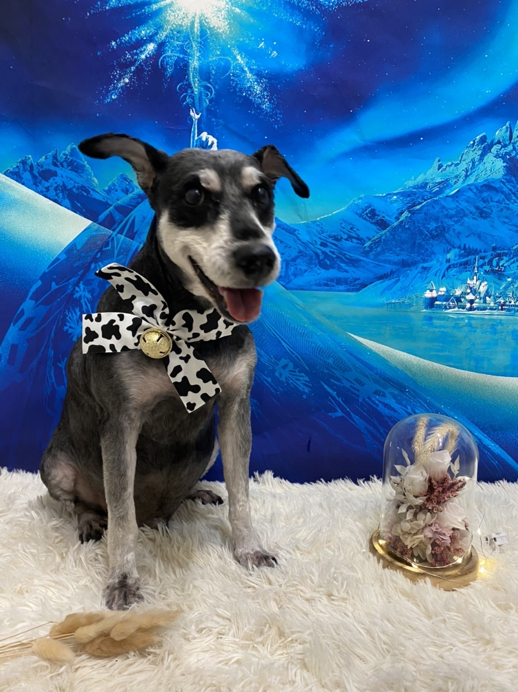

關於雪納瑞
 來自:德國 顏色分為:黑色、胡椒色和銀黑色
特色:結實、健壯(具有長鬍鬚、眉毛，腿上也羽狀的毛，耳根位置高，向前折下，尾根高，幾乎不掉毛。
來自:德國 顏色分為:黑色、胡椒色和銀黑色
特色:結實、健壯(具有長鬍鬚、眉毛，腿上也羽狀的毛，耳根位置高，向前折下，尾根高，幾乎不掉毛。
基本介紹:雪納瑞（Schnauzer）是來自德國的工作犬又被稱作史納莎，19世紀末起源自德國，被用來捕捉農場老鼠，另外又因為雪納瑞分為巨型、標準與迷你三種體型，也曾作為車馬犬。雪納瑞是一種工作態度非常認真負責的梗犬，梗犬一般個子較小，卻充滿精力，相當勇猛堅強，所以雪納瑞一直活躍至今，深受狗奴們的喜愛！
恰恰介紹
●恰恰（♂）
也因為上一隻狗狗走了,姐姐們看爸媽很難過,姐姐們就一起帶恰恰回了!
他是極聰明又機靈的犬種，它們非常會看臉色，對於主人開心難過也觀察入微。只能說是非常貼心又非常好氣的犬種，而且它們其實忌妒心也非常重，你只能對它好，一旦你出門碰了別的狗，進門被它查覺，那接下來只能努力討好它了~~
而到現在他也已經養12年了，相當於人類的64歲年紀也相當大了!!
更多關於雪納瑞影片
影片來源：Youtube
影片來源：Youtube